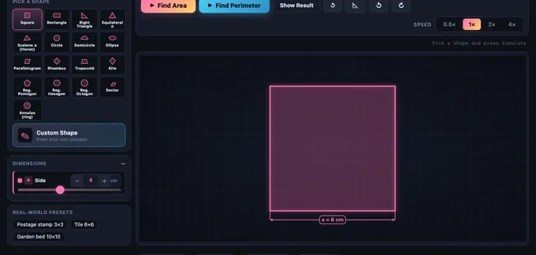

Area Calculator
16 shapes • custom polygons • SI/Imperial • for school students
3D Model — Surveying: Cross-Section Area
Interactive 3D model of this apparatus. Pick a component on the right, then drag to rotate · scroll to zoom · right-drag to pan.
User Guide
1 Overview
This is a colourful area calculator built for school students. It teaches the area of 16 standard shapes with animated formula derivation, and also handles custom polygons by splitting them into triangles.
Four modes are available:
- Simulate — pick a shape, change its size, watch the formula come alive.
- Explore — read about basics, formulas, real-world uses, and clever tricks.
- Practice — solve area questions one at a time with hints.
- Quiz — 5 mixed questions with star rating.
2 Picking a Shape
The shape picker shows 16 chips: Square, Rectangle, Right Triangle, Equilateral Triangle, Scalene Triangle (Heron), Circle, Semicircle, Ellipse, Parallelogram, Rhombus, Trapezoid, Kite, Regular Pentagon, Regular Hexagon, Regular Octagon, Sector, Annulus (ring), and Custom Polygon.
Click a chip to load it. The dimension sliders, formula, and canvas all update.
3 Simulate — the Animated Derivation
Press Find Area and watch a five-step animation:
- Shape draws in with a soft glow.
- Dimensions appear with coloured dimension arrows and labels.
- Formula appears in symbolic form (e.g.
A = π r²). - Values substitute into the formula one symbol at a time.
- Final area highlights with a confetti burst.
Use the Speed pills to slow down (0.5×) or fast-forward (4×). Show Result skips the animation. Reset restarts.
4 Custom Polygon — Draw Your Own Shape
Pick the Custom Polygon chip. Click on the canvas to drop vertices in order. When you have at least 3 points, either click your first point to close the polygon, or press Finish Shape. Use Undo Point to remove the last vertex, or Load Sample for a built-in L-shape.
When you press Simulate, the simulator fan-triangulates your polygon from the first vertex: each triangle lights up one by one in a different colour, its area is computed using the shoelace rule, and a running sum builds up. The final total is the area of your custom shape.
5 Explore Mode
Four tabs:
- Basics — what is area, square units, when to use each formula.
- Formulas — every formula in the simulator with a worked example.
- Applications — flooring, painting, farming, packaging, sport pitches.
- Tricks & Tips — estimation, units of area, decomposition strategies.
6 Practice & Quiz
Practice generates a random shape with given dimensions. Type the area and press Check. Show Working reveals the formula and substitution. Score updates after every check.
Quiz runs 5 mixed questions and shows a star rating: 5/5 = three gold stars, 3-4 = two green, 0-2 = one red.
Answers are accepted within ±1% tolerance to allow for rounding.
7 Canvas Tricks
Right-click the canvas to Save as Image, Copy Area Result to clipboard, or Reset Animation. Click directly on a dimension number to edit it precisely. All sliders can be typed with the stepper inputs.
8 Tips & Common Errors
- Use the perpendicular height — the height of a triangle or parallelogram is measured at right angles to the chosen base, not along a slanted side.
- Diameter vs radius — the circle formula uses radius squared. A diameter of 10 gives radius 5, so area is
π · 25, notπ · 100. - Trapezoid: average the parallel sides. The formula
(a + b) / 2 × htakes the mean of the two parallel sides. - Square units always. Length is metres; area is square metres. Don’t mix them.
- Custom polygons must be non-self-intersecting. If you cross your own lines, the triangulation can over- or under-count.
Area Calculator — Learn Area of Every Common Shape

This animated area calculator finds the area of 18 shapes — square, rectangle, triangle, circle, ellipse, trapezoid, hexagon, sector, annulus, and more — plus any custom polygon you draw. Each formula is animated step by step so the answer is never just a number.
Area is one of the first applied-mathematics topics children encounter, and it underpins flooring, painting, packaging, farming, sport pitches, sheet-metal layout, and computer graphics. Understanding the formulas, knowing when each one applies, and being able to decompose an irregular shape into pieces you do know how to handle are core skills for every geometry curriculum.
| Shape | Formula | Where it’s used |
|---|---|---|
| Square | A = s² | tiles, paving |
| Rectangle | A = l × w | rooms, screens |
| Triangle | A = ½ × b × h | roof faces, sails |
| Heron’s | A = √(s(s-a)(s-b)(s-c)) | surveying |
| Circle | A = π r² | plates, gears |
| Ellipse | A = π a b | oval rinks, lenses |
| Trapezoid | A = ½(a+b) × h | retaining walls |
| Parallelogram | A = b × h | plots of land |
| Rhombus | A = ½ d₁ d₂ | diamonds, kites |
| Regular polygon | A = ½ × perimeter × apothem | nuts, bolts, signs |
| Sector | A = ½ r² θ | pie charts, fans |
| Annulus | A = π(R² − r²) | washers, pipes |
| Custom polygon | Shoelace / triangulation | land plots, CAD |
How do you find the area of a triangle?
The base-times-height formula A = ½ × b × h works for any triangle as long as h is the perpendicular height measured to the chosen base. If only the three side lengths are known, use Heron’s formula: compute the semi-perimeter s = (a+b+c)/2, then take the square root of s(s-a)(s-b)(s-c). The Scalene Triangle preset in this simulator animates Heron’s formula one step at a time.
How do you find the area of an irregular shape?
The general technique is decomposition: break the shape into pieces whose areas you already know. For any polygon you can pick one vertex and fan-triangulate — draw line segments from that vertex to every other vertex, producing n − 2 triangles for an n-sided polygon. Compute each triangle’s area with the shoelace formula and add. The Custom Polygon mode here animates exactly that process.
What is the difference between perimeter and area?
Perimeter is the distance around a shape and is measured in linear units (cm, m, in). Area is the amount of surface inside and is measured in square units (cm², m², in²). Two shapes can have the same perimeter but completely different areas — a long thin rectangle 1×10 has perimeter 22 and area 10, while a square 5.5×5.5 has the same perimeter 22 but area 30.25.
Who Uses This Simulator?
School students in Grades 4-10 learning mensuration and geometry, classroom teachers projecting an animated derivation, and home-school parents who need a visual aid. The custom-polygon mode is also useful for older students exploring the shoelace formula and triangulation as an introduction to computational geometry.
Explore Related Simulators
If you found this area calculator helpful, explore our Calculus Visualizer, Math Function Graph Generator, Matrix Calculator, and Tolerance & Fits Calculator for more hands-on mathematics practice.